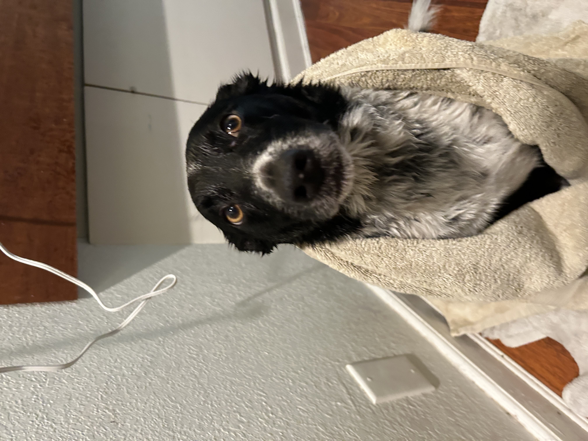

Emmabella's Homepage
About Me

Hey y'all my name is Emmabella, but most people call me EB. I use the word y'all a lot despite being from Los Angeles. I don't know where I got it from. I'm a third year and I'm a Psychology and Film & Digital Media double major. I am most interested in the short-form media we consume on a daily basis and how our brains process this media that we consume often subconsciously. My Letterboxd top four are Eternal Sunshine of the Spotless Mind, Clueless, Heathers, and Hunger Games: Catching Fire. Also my girlfriend has a very cute dog who is basically my biological son, pictured below.
